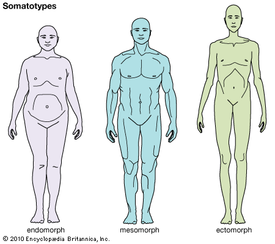
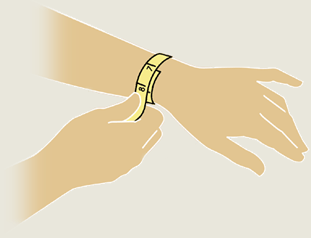
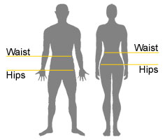

Bomico Guide
BMI
Or Quetelet index, is a heuristic proxy for human body fat based on an individual's weight and height. BMI does not actually measure the percentage of body fat. It was devised between 1830 and 1850 by the Belgian polymath Adolphe Quetelet during the course of developing "social physics".Body mass index is defined as the individual's body mass divided by the square of his or her height. The formulae universally used in medicine produce a unit of measure of kg/m2.Activity
| Activity | Description | |
|---|---|---|
| Sedentary | Little or no exercise / desk job. | Your typical daily routine requires little physical movement. (e.g., sitting for long periods, using a computer, relying primarily on motorized transportation) and you accumulate little physical activity in your leisure time |
| Low Active | 1-3 sport/week | Your typical daily routine involves some physical activity (e.g., walking to bus, mowing the lawn, shoveling snow) and you accumulate some additional physical activity in your leisure time. |
| Active | 5 sport/week | Your typical daily tasks involve some physical activity and you accumulate at least 2 ½ hours of moderate- to vigorous-intensity aerobic physical activity each week. Moderate- to vigorous- physical activity will make you breathe harder and your heart beat faster. |
| Very Active | 6-7 sport/week | |
| Extreme | 2 sport/day |
Ideal Weight Formulas
Formulas used to calculate the Ideal Weight:- J. D. Robinson Formula (1983)
- D. R. Miller Formula (1983)
- G. J. Hamwi Formula (1964)
- B. J. Devine Formula (1974)
- Social formula: The "Peoples Choice" formula for Ideal Weight was designed by Dr. SB Halls. It is partly based on the publication by Dr. D. Crawford and K. Campbell1, entitled "Lay definitions of ideal weight and overweight", from the International Journal of Obesity in 1999
BMR
BMR stands for Basal Metabolic Rate. It is the amount of daily energy expended by humans and other animals at rest. Rest is defined as existing in a neutrally temperate environment while in the post-absorptive state.TDEE
Total Daily Energy Expenditure (TDEE) is a calculation of the caloric requirements to maintain weight.EER
Estimated Energy Requirements. is a method to determine how much energy intake your body requires on a daily basis. The formula to find out includes he following variables: sex, height, weight and the amount of physical activity you do. As such, by finding out your EER, you can determine how much activity you need to perform on a daily basis to lose weight, gain weight or maintain your current weight.Body Type (Morphology - Somatotype)
Ectomorph
An ectomorph is a typical skinny guy. Ecto’s have a light build with small joints and lean muscle. Usually ectomorph’s have long thin limbs with stringy muscles. Shoulders tend to be thin with little width. Typical traits of an ectomorph:- Small “delicate” frame and bone structure
- Classic “hardgainer”
- Flat chest
- Small shoulders
- Thin
- Lean muscle mass
- Finds it hard to gain weight
- Fast metabolism
Mesomorph
A mesomorph has a large bone structure, large muscles and a naturally athletic physique. Mesomorphs are the best body type for bodybuilding. They find it quite easy to gain and lose weight. They are naturally strong which is the perfect platform for building muscle. Typical traits on a Mesomorph:- Athletic
- Hard body with well defined muscles
- Rectangular shaped body
- Strong
- Gains muscle easily
- Gains fat more easily than ectomorphs
Endomorph
The endomorph body type is solid and generally soft. Endomorphs gain fat very easily. Endo’s are usually of a shorter build with thick arms and legs. Muscles are strong, especially the upper legs. Endomorphs find they are naturally strong in leg exercises like the squat. Typical traits of an Endomorph:- Soft and round body
- Gains muscle and fat very easily
- Is generally short and “stocky”
- Round physique
- Finds it hard to lose fat
- Slow metabolism
Origin
The Asian perception of BMI status is slightly different.Ideal Weight Range
This is the weight range recommended by the WHO, within which one is considered to have an ideal weight, otherwise, considered to have a fit weight.Body Measures
Wrist
Measure the wrist as in the picture (the weakest circumference of the arm).
Waist & Hip
Measure the circumference by standing firm, feet slightly separated. For Waist measurement, it's recommended before breakfast.